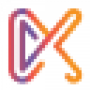
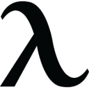
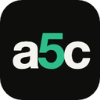

Best AI agents for writing code (2026)
Coding agents that write, edit and refactor code from plain-language requests, in your terminal, editor or browser. We list 556 tools for writing code below, each with a link-checked page, pricing as the maker states it and alternatives.
Updated
556 tools: 379 open source, 19 source-available, 89 free or freemium, 47 paid, usage-based or enterprise, 22 pricing on the maker's site.
Terminal and CLI agents (69) See the full list →
Impeccable
Impeccable gives coding agents a design vocabulary: install it into a project and steer with commands such as polish and bolder, review with critique and audit, and catch typical AI-generated design clichés before they ship; works with Claude Code, Cursor, Codex CLI, Copilot, Gemini CLI and more.
Added
OpenSquilla
An open-source microkernel AI agent built for token efficiency, with a CLI, a web UI and chat-channel front ends. The team has published a technical report on its agentic routing.
Added
Agentic Resource Registry
A self-hosted registry where teams share and discover coding-agent resources across Claude Code, Kiro, Cursor, Codex and Pi, used through the observal CLI.
Added
opencode
OpenCode is an MIT-licensed open-source AI coding agent for the terminal, with a beta desktop app, that works with many model providers instead of locking you to one. Install it with a one-line script, npm, Homebrew, pacman, mise or Nix, then let it read your repository, edit files and run commands from a keyboard-driven TUI.
Added
OpenAI Codex CLI
Codex CLI is OpenAI's Apache-2.0 coding agent that runs locally in your terminal, reading your repository, editing files and running commands, with standalone installers for macOS, Linux and Windows plus npm and Homebrew. The same agent is available as IDE extensions for VS Code, Cursor and Windsurf, a desktop app via codex app, and the cloud-based Codex Web in ChatGPT.
Added
Pi
Minimal, extensible open-source terminal coding agent and agent toolkit from Earendil, with a multi-provider LLM API, TypeScript SDK, RPC mode and installable extensions, skills and themes.
Added
OpenHands
OpenHands is an MIT-licensed platform for autonomous coding agents whose Agent Canvas acts as a self-hosted control center: start conversations and automations such as Slack reports or splitting GitHub issues into tasks, and run the OpenHands agent or ACP-compatible agents like Claude Code, Codex, Gemini CLI and OpenCode on local, Docker, VM or company backends, with optional OpenHands Cloud and Enterprise.
Added
Open Interpreter
Terminal coding agent forked from OpenAI's Codex and tuned for low-cost and open-weight models, with switchable harness modes that imitate tools like Claude Code.
Added
Warp
Agentic development environment built from the terminal, now open source, for running coding agents and cloud software factories.
Added
Aider
Pair-programming agent in your terminal that commits changes to git.
Added
Codewhale
Rust agent engine and terminal coding client with model choice, tool approvals and review flows.
Added
Oh My Pi
Terminal coding agent with IDE features wired in, from Stencil Labs.
Added
MCP servers (60)
Claude Code Templates
Claude Code Templates is an open catalog and CLI of more than 1,980 Claude Code components (skills, subagents, slash commands, hooks, MCP servers and settings) at aitmpl.com, where you preview each file and combine components into one npx install that merges with your existing configuration.
Added
WordRadar
WordRadar is a keyword radar for indie SEO builders that flags brand-new search terms as they first appear in a 1M-word ledger, watches new Hacker News launches and Google Trends risers, and scores SERP difficulty, all served over a REST API and an MCP server so coding agents can research niches; credits from $19, with free starter credits.
Added
Firecrawl MCP Server
Firecrawl MCP lets coding agents scrape and crawl the web through MCP with keyless access, account sign-in or an API key.
Added
Kilobat CLI
Kilobat CLI is a macOS network diagnostics toolkit with a local stdio MCP server so coding agents can probe DNS, TLS, routes and connectivity from the terminal.
Added
Maeve Social
Maeve Social is a social media management tool with an AI assistant, client approvals and reporting, plus a REST API, CLI and MCP server for automation.
Added
CC Switch
Desktop manager for Claude Code, Codex, Gemini CLI, OpenCode, OpenClaw and other coding agents that switches API providers in one click and manages MCP servers, skills and prompts.
Added
MobileBuildMCP
Sentry's MCP server and CLI that gives coding agents build, test and run tools for iOS and macOS projects.
Added
21st Magic MCP
MCP server from 21st.dev that lets Cursor, Claude Code and Windsurf search and generate React and Tailwind UI components inside the editor.
Added
CodeGraphContext
MCP server and CLI that index local code into a graph database so AI assistants can query code relationships.
Added
shadcn/ui MCP Server
MCP server that gives AI assistants shadcn/ui v4 components, blocks and demos for React, Svelte, Vue and React Native.
Added
ripwire
Zero-dependency CLI and MCP server that gives coding agents a ranked call graph, blast radius and tests-to-run before and after edits.
Added
Next.js DevTools MCP
Vercel's MCP server that connects coding agents to running Next.js dev servers for live errors, routes, logs and docs.
Added
Running many agents in parallel (32)
Pullboard
Pullboard is a spec-driven coordination board that lives in your Git repo: many coding agents claim work in separate lanes and build from a spec you approved, a second agent verifies every change, and you answer questions and approve from one board.
Added
CCPM
CCPM is a project-management skill system for agents that uses GitHub Issues and Git worktrees for parallel agent execution.
Added
Orca
Agent development environment for running a fleet of parallel coding agents on your own subscriptions and reviewing their work.
Added
Oh My OpenAgent (OmO)
Agent harness add-on (OmO) for OpenCode and Pi that runs multi-model coding agent teams with memory, planning and parallel workflows.
Added
Herdr
Runtime for running and managing many coding agents side by side.
Added
Oh My Claudecode
Multi-agent orchestration layer for Claude Code that coordinates teams of specialized agents.
Added
Paseo
Orchestrate multiple coding agents from desktop and mobile.
Added
Superset
Agentic IDE for orchestrating many coding agents in parallel.
Added
Agent Orchestrator
Runs and supervises teams of coding agents from planning to merge.
Added
Worktrunk
CLI for managing Git worktrees so several AI agents can work in parallel.
Added
ZCode
ZCode is Z.ai's open-source AI coding workspace and official harness for GLM-5.3, with a desktop app, web interface and terminal agent that run multiple agents on long goals, plus control from WeChat, Feishu or Telegram.
Added
Mission Control
Self-hosted control plane for dispatching tasks to agents, reviewing runs and tracking spend.
Added
Code review (31)
Open Code Review
Alibaba's AI code review CLI that combines deterministic pipelines with an LLM agent to post line-level comments on Git diffs, using OpenAI or Anthropic models.
Added
Open SWE
LangChain's asynchronous coding agent that takes work from GitHub issues, Slack or Linear, implements it in an isolated sandbox and opens a pull request.
Added
Plannotator
Visually annotate and review coding-agent plans and diffs, then send feedback back to the agent.
Added
Hunk
Review-first terminal diff viewer for checking what coding agents changed.
Added
ThinkRail
JetBrains' lightweight agentic IDE that pairs you with the pi coding agent, with isolated git-worktree workspaces, editor tabs, terminals and diffs.
Added
Emdash
A free, open-source agentic development environment (YC W26) for running Claude Code, Codex and other coding agents in parallel, each in its own worktree, then reviewing diffs, PRs and CI in one place.
Added
sem
Semantic layer on top of Git that diffs, blames and traces impact by function and class instead of by line, with an MCP server for coding agents.
Added
PR Lens
PR Lens helps people review code that agents wrote. For each pull request it draws animated architecture and data-flow diagrams inside the PR, showing which parts of the app were added, changed or removed, what else depends on the change and how a request now moves through the system. It also flags likely bugs, security holes and design problems in the same review comment, with a ready prompt to hand each fix to your coding agent or an autofix. The open-source core runs locally and installs as an agent skill.
Added
Lody
A team workspace for running AI coding agents in parallel in isolated Git worktrees, with live diff review, GitHub integration and access from phone or desktop.
Added

Kodus
Self-hostable AI code reviewer for GitHub, GitLab, Bitbucket and Azure DevOps pull requests that works with the model you choose.
Added
OpenQodex
Code review that runs inside your coding agent before you push, combining security and quality scanners with a separate AI reviewer.
Added
agent-manager
agent-manager is a terminal app built on tmux for running many AI coding agents at once. It shows live status for Claude Code, Codex, OpenCode, Gemini, Grok, Cursor and other sessions in a foldable project tree, adds a quick prompt bar, and has a diff reviewer whose line comments are sent straight back to the right agent, on macOS, Linux and Windows.
Added
Sandboxes and secure execution (29) See the full list →
HTML Anything
An agentic HTML editor from the Open Design team. Your local coding-agent CLI (Claude Code, Cursor, Codex, Gemini and others) writes HTML decks, posters, reports and prototypes from 75 skills, shows them in a sandboxed preview, and exports in one click. No API key is needed.
Added
NemoClaw
NVIDIA's open-source reference stack for running agents such as OpenClaw, Hermes and LangChain Deep Agents inside NVIDIA OpenShell sandboxes. It adds guided onboarding, managed inference, network policy and lifecycle commands through a CLI.
Added
Pydantic Deep Agents
Self-hosted terminal AI assistant and Python framework on Pydantic AI, with tool calling, sandboxed execution, multi-agent teams and checkpoints.
Added
Cloudroom
Cloudroom runs Claude Code, Codex, Pi and other coding agents in the cloud, each in its own isolated sandbox on its own Git branch, using your own model logins; the Rust core is open source to self-host, and a desktop app manages local and cloud agents.
Added
NVIDIA OpenShell
Sandboxed runtime for autonomous agents with declarative YAML policies on file, network and credential access.
Added
OpenSandbox
Secure, fast sandbox runtime for AI agents to run code.
Added
E2B
Secure cloud sandboxes for running agent-generated code.
Added
CubeSandbox
Lightweight, concurrent sandbox for running AI agent code securely.
Added
microsandbox
Local-first microVM runtime for running untrusted agent code safely.
Added
Fragments
E2B's open-source Next.js template for AI-generated apps, like Claude Artifacts or v0, with generated code run in secure E2B sandboxes.
Added
AIO Sandbox
All-in-one Docker sandbox for AI agents that combines a browser, shell, files, MCP, VS Code Server and Jupyter in one container.
Added
agentOS
A lightweight operating system for agents from Rivet that runs coding agents and their tools inside fast WebAssembly sandboxes with a file system, processes and networking, so you can spin up thousands cheaply.
Added
Codebase context and code search (25)
Archify
Archify is an Apache-2.0 agent skill for Cursor, Claude Code, Codex CLI and OpenCode that turns an idea, plan or whole codebase into an interactive HTML diagram you can explore, follow source links through and share, from repository maps to learning paths and travel plans.
Added
Fallow
Codebase intelligence for TypeScript and JavaScript in a single Rust binary. It reports health, complexity hotspots, duplication, circular dependencies, architecture boundaries and unused code, and ships as a CLI, a GitHub Action, an LSP, an MCP server and a VS Code extension.
Added
Claude Code
Claude Code is Anthropic's agentic coding tool that lives in your terminal, understands your codebase and carries out routine tasks, explains complex code and handles git workflows through natural-language commands. It also runs in IDEs and on GitHub when you tag @claude, and installs via a native script, Homebrew or WinGet (the npm install is deprecated).
Added
Graphify
Turns a codebase plus its docs, SQL schemas, configs and PDFs into a knowledge graph that coding agents can query.
Added
Understand-Anything
Turns any codebase, knowledge base or docs folder into an interactive knowledge graph you can explore and question, working inside Claude Code, Codex, Cursor, Copilot and Gemini CLI.
Added
Context Mode
Context window optimizer for coding agents that sandboxes tool output and persists session memory.
Added
code-review-graph
Local code knowledge graph built with Tree-sitter that serves compact review context over MCP, so coding agents read only the files a change touches.
Added
Repomix
CLI and web tool that packs an entire repository into a single AI-friendly file (with an MCP server) so coding agents and LLMs get full codebase context.
Added
HumanLayer
Tools for getting coding agents to solve hard problems in complex codebases.
Added
Claude Context
Zilliz MCP plugin that adds semantic code search to Claude Code and other coding agents, using your whole codebase as context.
Added
Trail Code
Context layer that makes Claude Code, Cursor, Codex and other coding agents faster and cheaper on large codebases.
Added
Repowise
Codebase intelligence tool that indexes code, call graph, git history and docs locally and answers questions for you and your coding agent over MCP.
Added
Memory (24) See the full list →
MEX
MEX gives engineers and their coding agents shared project memory stored as Markdown in a .mex folder that travels with Git, with a local hub for people, CLI and skills for Claude Code and Codex, an MCP server and checked statechart explanations.
Added
Beads
Issue-tracking memory for coding agents so they can keep track of long-running work.
Added
MiMo Code
Xiaomi's terminal coding agent with persistent project memory across sessions; works with any major model provider and is tuned for Xiaomi's MiMo models.
Added
Compozy
Operating system for AI agents that turns Claude Code, Codex, Gemini CLI and Cursor into a team with task handoff, loops, jobs and shared memory.
Added
Zerostack
Lightweight coding agent written in Rust, optimized for memory footprint and performance
Added
Sno Station
Sno Station turns the coding agents you already use (Claude Code, Codex, Cursor, Hermes, OpenClaw) into one squad on your machine with shared memory, and its Self Learning reviews their sessions and proposes skill-file fixes you approve.
Added
Pi-Bolt
The Pi terminal coding agent compiled ahead of time into one native executable for Linux, Android (Termux), Apple-silicon macOS and Windows, with no Node.js or Bun needed. It keeps Pi's commands, sessions, providers and extensions while starting about 10x sooner and using far less CPU and memory in the project's published benchmarks. MIT.
Added
Dosu
Knowledge infrastructure that keeps docs, specs and agent memory current with your code for teams and coding agents.
Added
ECC
The agent harness performance optimization system. Skills, instincts, memory, security, and research-first development for Claude Code, Codex, Opencode, Cursor and beyond
Added
Claude-Mem
Gives coding agents memory across sessions by capturing what they do, compressing it and feeding the relevant context back in later.
Added
Deer Flow
ByteDance's open-source long-horizon agent harness that researches, codes and creates using sandboxes, memory and sub-agents.
Added
TencentDB-Agent-Memory
Team-level memory hub that turns conversations, docs and code into shared memory for agents.
Added
Planning and task tracking (20) See the full list →
Agent Skills (Addy Osmani)
Agent Skills by Addy Osmani packages senior-engineer workflows and quality gates as skills for AI coding agents, with nine slash commands such as /spec, /plan, /build, /test, /review and /ship that walk an agent from idea to production with tests and review at each step.
Added
GSD Core
GSD Core is a spec-driven development and context-engineering framework that runs Claude Code, Codex, Cursor, Copilot and other coding agents through a discuss, plan, execute, verify and ship loop, doing heavy research and execution in fresh-context subagents to avoid context rot.
Added
Nexting
Nexting is a remote control for the coding agents on your own Mac or Windows PC: view live Claude Code, Codex, Grok or Cursor sessions, send tasks and drive them from the iPhone app or a $129 wearable PIN, with an open-source devices SDK and an optional $29/month Plus plan.
Added
Ploutos
Ploutos is an AI community manager for Discord servers that welcomes new members, answers repeat questions, handles tickets and escalates to humans when needed, with a human team supervising it around the clock; plans start at $7.99 a month plus a one-time setup fee.
Added
Chorus
Chorus is an agent harness for AI-human collaboration inspired by AI-DLC, with kanban-style control for Claude Code sessions.
Added
Modurian
Modurian is a multi-agent AI workspace that plans, writes code, previews live and deploys web apps from an idea to a production URL.
Added
Gemini CLI
Gemini CLI is Google's Apache-2.0 open-source terminal agent that brings Gemini models into your shell to read code, edit files and run commands. As of June 18, 2026 it is aimed at Gemini Code Assist Standard/Enterprise and Code Assist for GitHub users; free individual access and Google AI Pro/Ultra plans moved to Antigravity CLI, and the project says it is not tuned for the Gemini 4 series.
Added
Vibe Kanban
Kanban board for planning and running tasks with Claude Code, Codex and other coding agents.
Added
Planning With Files
File-based planning for coding agents, keeping Markdown plans that survive crashes and session resets.
Added
Backlog.md
Markdown task board in your Git repo for coordinating work between people and AI agents.
Added
Agent Teams
Free desktop app where teams of AI agents take tasks from a kanban board, message each other and review each other's work.
Added
Nimbalyst
Visual workspace for working with coding agents like Claude Code on docs, code and plans.
Added
Rules, skills and config (17) See the full list →
UI UX Pro Max
UI UX Pro Max is an open-source agent skill that gives coding agents design intelligence for web and mobile UI, with a design-system generator that reasons over your product type and outputs matching styles, colour palettes, font pairings, layout patterns and UX rules for many frameworks.
Added
Taste Skill
Taste Skill is an MIT Agent Skill that pushes coding agents to build polished company websites instead of generic landing pages, enforcing one design system, plain copy, real photos and brand icons, restrained motion, and a browser-based checker and finish gate that verify the rules before a page is done.
Added
Refly
Refly is an open-source platform for building stable, versioned agent skills through a visual "vibe workflow": it compiles your team's SOPs into executable skills you can run in Refly, export to Claude Code or deploy as APIs and webhooks, with a community skill registry; self-host or use the cloud.
Added
Skill Seekers
Skill Seekers helps you discover and install agent skills for coding assistants, turning skill packs into something you can search and apply in Claude Code, Cursor and similar tools.
Added
Oh Story
Oh Story is a set of MIT-licensed skills that turn Claude Code or Codex into a web-fiction workflow for research, chapter drafting, de-AI editing and covers.
Added
Gentle AI
Configures the coding agents you already use with shared rules, skills and settings.
Added
Anti Slop
Rules for an AI coding agent to filter out generic AI-generated UI designs, text, and code
Added
shadcn/lint
Linter for Tailwind design systems from shadcn that turns your design rules into checks coding agents can run and fix against.
Added
Ruler
Applies one set of rules to all your coding agents.
Added
LibreChat
Self-hosted, multi-user AI chat platform with agents, MCP, skills, code interpreter and support for OpenAI, Anthropic, Gemini, AWS, Azure and many more providers.
Added
Universal Modder
Skills, tools and a shared knowledge base that let Claude Code and other coding agents mod PC games you own, from engine recon to in-game testing.
Added
Voyager
Research agent that explores Minecraft on its own, writing and reusing code skills to learn as it goes.
Added
IDE and editor agents (13) See the full list →
Zed
High-performance, multiplayer code editor from the creators of Atom and Tree-sitter, with built-in AI agent editing for macOS, Linux and Windows.
Added
Cline
Autonomous coding agent inside VS Code with step-by-step approvals.
Added
Cursor
AI code editor with an agent mode and background agents.
Added
Roo Code
Discontinued: the open-source VS Code agent with custom modes (architect, code, debug) was shut down on May 15, 2026 and its repo archived; the team now builds Roomote, and roocode.com redirects there. Cline and the community fork ZooCode are the suggested alternatives.
Added
Jupyter AI
Official JupyterLab extension that connects AI agents and chat to notebooks.
Added
OpenSumi
Framework for building AI-native IDE products, with an MCP client and agent features.
Added
Erd Editor
Design database schemas as ERDs in your browser, VS Code, JetBrains IDEs or Obsidian. Import SQL, DBML and GraphQL, export DDL and code, and let coding agents edit live over MCP
Added
Runcell
AI agent for Jupyter notebooks that writes and runs code cells.
Added
TRAE
AI coding IDE and agent that works alongside you in your editor to write, edit and run code.
Added
Windsurf
AI IDE with the Cascade agent, now rebranded as Devin Desktop after Cognition acquired Windsurf (windsurf.com redirects there).
Added
Serena
MCP toolkit that gives coding agents semantic code retrieval and editing, like IDE features.
Added
FastGPT
AI agent building platform with knowledge-base RAG, data processing and a visual workflow editor for deploying question-answering and automation apps.
Added
Onlook
An open-source visual editor for React and Tailwind apps where you design on a canvas and an AI agent writes the code. Edit layouts like in Figma, then export clean code to your own repo.
Added
Testing and QA (9) See the full list →

OpenHarness
OpenHarness from Autonomous is a native command center for running coding agents side by side, including Claude Code, Codex, Cursor, OpenCode, Devin, Amp and Copilot. It links your laptop, home server and GPU box into one window with a password instead of SSH keys or port forwarding, keeps code and keystrokes end-to-end encrypted through its relay, and is keyboard first. Agents keep working when you close it, and it extends beyond code to CAD, circuits, robots, games and music.
Added
QA Agent
QA Agent is an open-source Playwright library for AI browser regression testing. An agent writes, runs, or maintains tests and reports what broke.
Added
agent-qa (Vostride)
A self-improving AI QA agent with persistent memory that tests web, Android and iOS apps from plain-English test steps, for developers and coding agents.
Added
Agentic QE
Agentic QE Fleet is an open-source QA platform that works with coding agents to test software
Added
Aura Autopilot
Open-source, continually learning playtesting agent from Ramen, the team behind the Aura game-dev assistant. Installed as a plugin in Unreal Engine 5, Unity 6 or Godot 4 on Windows and macOS, it reads your project's source, writes a bespoke harness for a real-time decision model, then plays the game with real keyboard and mouse input to explore levels, test features, verify fixes or pursue goals such as 'kill 10 enemies', and files a report with what broke. Per-game memory makes it faster each run; works with an Aura plan, BYOK keys, or Claude Code and Codex via its skills and MCP server. Apache-2.0.
Added
Encord Agents
Encord's agents that plug foundation models or your own models into labeling workflows to pre-label, segment, track, route and QA image, video and multimodal data, with a no-code catalog and an open-source SDK.
Added
Momentic
AI testing platform with an AI QA agent that runs and maintains plain-English tests and reports bugs with repro steps.
Added
TestSprite
TestSprite is an agentic testing tool that writes and runs end-to-end tests after code changes
Added
Vinsi
VINSI is the all-in-one AI SaaS platform for premier AI voice agents, CX automation, CRM, workflows, ticketing, QA, analytics, and more. We deliver a powerful, secure AI ecosystem built to help you dominate any industry
Added
Token usage and cost tracking (9) See the full list →
Token Tracker
Token Tracker is a free, open-source, local-first dashboard that monitors AI token usage and cost across Claude Code, Codex, Cursor, Gemini and 27 CLIs.
Added
rtk
A CLI proxy that sits between coding agents and your shell and trims noisy command output before it reaches the model, cutting token use on everyday commands like tests, builds and git. Free and open source, with an RTK Pro tier for teams.
Added
Tokscale
Tracks token usage across AI coding agents from your terminal.
Added
abtop
htop-style monitor for Claude Code and Codex sessions and token use.
Added
Jevgrep
CLI that finds relevant repo files and excerpts from natural-language questions for coding agents; claims ~40% cheaper agent runs.
Added
Codeburn
Free, local tool to track AI coding token usage and cost across 37 tools and agents (Claude Code, Cursor, Codex, Gemini and more), by model, project, and task. npx codeburn
Added
Weave Router
An open-source LLM router for Claude Code, Codex and other coding agents that sends each request to the cheapest model that still meets your quality bar, cutting model spend.
Added
jCodeMunch MCP
MCP server for symbol-level code exploration that cuts token use.
Added
HiRoute
HiRoute, from the Higress team, is an open-source local model router for long-running agents like Codex and Claude Code: it hands routine stages to cheaper models, saves your strongest model for hard steps and keeps a record of each decision.
Added
Penetration and security testing (7)
CyberStrike
Terminal agent for authorized penetration testing that runs recon, vulnerability discovery and reporting with specialized security agents on your own LLM.
Added
Redamon
Open-source, self-hosted AI penetration testing framework: maps your attack surface into a graph, autonomously exploits it from a Kali sandbox with human approval gates, and opens PRs that fix what.
Added
Mantis
Google's toolkit for AI coding agents to autonomously find, reproduce and patch software vulnerabilities in isolated environments.
Added
Rogue
Agent evaluator and red-team tool that probes your agent with test conversations and attacks and reports pass or fail against your policies.
Added
Aletheore
Aletheore audits code repositories and backs every finding with evidence. Its deterministic scanner looks for leaked secrets, vulnerable dependencies and dead code, it can watch live endpoints and draw architecture maps, and it reviews pull requests automatically through a GitHub Action. A built-in MCP server lets coding agents run the same audits.
Added
0.security
0 is an open, self-improving AI operating system for offensive security work. Its agents investigate code and binaries for vulnerabilities, test defenses, verify findings with working proofs and help fix the issues, and the team behind it publishes the advisories it has found in real open-source projects.
Added
Octane
Agentic security analysis that finds exploitable vulnerabilities in mission-critical code, including DeFi smart contracts.
Added
Autonomous and cloud coding agents (4)
BackAnt Kairos
Backant's Kairos, an autonomous developer that runs Claude Code against your repository.
Added
Devin
Cognition's autonomous software engineer that takes tickets and opens PRs.
Added
SWE-bench
Benchmark that tests whether language models and coding agents can resolve real GitHub issues, with multimodal and verified variants.
Added
OpenMeld
An open-source collaboration system where people, cloud agents and coding agents such as Codex, Claude Code and Cursor share context and pick up each other's work.
Added
More tools (207)
Ponytail
Ponytail is an MIT-licensed skill for Claude Code and other coding agents that makes them write like a terse senior engineer: only the code a task needs, without cutting validation, error handling, security or accessibility; its published benchmark on 39 tasks reports roughly half the code, time and tokens while more risky logic ships with tests.
Added
Caveman
Caveman is an Apache-2.0 skill and proxy for coding agents that cuts tokens by making the agent answer in clipped "caveman" prose and read less context, while keeping code exact; it reports about a third fewer input tokens in Claude Code sessions and offers an Auto mode and a hosted Caveman Cloud.
Added
Ekko Studio
Ekko Studio (formerly Hermes Studio / Hermes Web UI) is a local-first desktop app and self-hosted web console for multi-agent chat, coding and visual workflows, supporting Hermes Agent, Ekko Agent and 14 coding-agent integrations including Claude Code and Codex, with group chat, voice, files and human approval gates.
Added
TrackAIMentions
TrackAIMentions runs a free AI visibility check that asks ChatGPT-style models and Perplexity five organic questions about your category and shows whether they recommend your brand, list a competitor first or skip you, with sample reports, methodology notes and paid monitoring for agencies.
Added

Babysitter
Babysitter is an orchestration layer for coding-agent workforces: you define a workflow in code and it enforces every step, requires quality gates and human approval at breakpoints, and records every decision in an immutable journal.
Added
Else
Else is a pay-per-job AI agent: hand off research questions, reports, spreadsheets or a whole website, set a spending limit, and get the finished result with an itemised receipt instead of paying a subscription or buying credits.
Added
TrueScope
TrueScope is a mobile business suite for trade contractors, fabricators and field service companies with blueprint takeoffs, ERP and MRP, work tickets and invoicing, plus a REST API and agentic features that let AI agents work with job data; $20 per full user a month after a 30-day trial.
Added
Penguin Harness
Penguin Harness is a unified RSI platform that stabilizes coding-agent loops for Claude Code, DeepSeek and similar tools.
Added
Happier
Happier is a web, desktop and mobile client and orchestrator for Codex, Claude and other coding agents with session control across devices.
Added
MoAI ADK
MoAI ADK is an agentic development harness for Claude Code with SPEC-driven workflows for reliable coding-agent runs.
Added
CyberScryb
CyberScryb offers free AI tools for writing, life admin and code helpers in one lightweight web suite.
Added
easi.run
easi.run is self-hosted Chrome for coding agents, giving agents a controllable browser they can drive without a SaaS middleman.
Added
GitHub repos (437)
| Repo | GitHub stars | Licence | Last push |
|---|---|---|---|
| 410,375 | MIT | 2026-10-30 | |
| 293,059 | MIT | 2026-10-30 | |
| 223,180 | MIT | 2026-10-30 | |
| 209,107 | Sustainable Use License (fair-code; .ee files under the n8n Enterprise License) | 2026-10-30 | |
| 187,364 | — | — | |
| 159,989 | Modified Apache License 2.0 with additional conditions | 2026-10-30 | |
| 156,158 | MIT | 2026-10-30 | |
| 153,919 | Proprietary (All rights reserved; Anthropic Commercial Terms of Service) | 2026-10-30 | |
| 150,320 | MIT | 2026-10-30 | |
| 147,219 | — | — | |
| 139,123 | Apache License 2.0 | 2026-10-27 | |
| 131,661 | Apache License 2.0 | 2026-10-30 | |
| 118,955 | MIT | 2026-10-30 | |
| 118,539 | — | — | |
| 114,397 | — | — |
Top 15 of 437 by stars. Stars and licence come from each repo, checked when the listing was last verified.
Related tasks
Popular with: Developers · Open-source maintainers · Related searches: Free AI coding agents with a free plan · Open-source AI coding agents
Tools are matched to tasks by category, use cases and what each tool says it does. Missing one? Submit it free.
All tools on this page
Crush · Qwen Code · Cmux · Kilo Code · opcode · CloudCLI · Loop Engineering · Terax · Munder Difflin · mini-SWE-agent · coucou · ANUS · TUIOS · Entire CLI · AutoDev · gptme · OmniRush · Grok CLI · Toad · Nanocoder · nodeterm · Intelligent Terminal · Claude Code Tools · Ante · Zero · Beautiful Rust · Waku · Agmsg · Wake · CLI Agent Orchestrator · tty7 · Reason Network · luvus · hax · PiG · mu · Termish · Coddo · Orke · Amp · Factory · skills.sh · Magpie · opencodex · Botpress · Agents CLI · Answer Me with HTML · OpenKnowledge · Open Terminal · OpenGAP · HOL Guard · Libretto · Pinloop · MyShell · Vectoree · HyperFrames · Agentic Scientist · Svelte MCP · Cypress Cloud MCP · MCP reference servers · Headroom · Context7 · Chrome DevTools MCP · Activepieces · Framelink Figma MCP · GitMCP · Jscpd · Observal · Ffmpeg Skill · Paper2Agent · Figma Console MCP · Unla · Figma MCP Server · Azure DevOps MCP · Gortex · Grounded Docs MCP · MATLAB MCP Server · Proxima · Alpaca MCP Server · Sentry MCP · SonarQube MCP Server · BrowserStack MCP · Keboola MCP Server · Buildkite MCP · LaunchDarkly MCP · Stack Overflow MCP · Unleash MCP · DevCycle MCP · ReadGZH · Diagrid Catalyst MCP · Edgegap MCP · 3Dsellers MCP · BetterClaw · CircleCI MCP · Encord Merlin · GrowSurf MCP · PhoneUse · Pimlico AI · Senzing MCP · Sonatype MCP · SuprSend MCP · IDA MCP (Hex-Rays) · Openlayer MCP · Container Use · golutra · Maestro · MonoCode · Zeron · FuXi · Oil UI · Oh My Agent · Concord · Foremerge · Vicoa · Shipyard · Imbue · Mirror CLI · CCC · Conductor · Verdent · Dodaios · Pudding · LayerFS · CodeAF · Sphinx · Muxin · Roomote · Orbi · Diffinery · Baz · CodeRabbit · Coldtea · cubic · Greptile · Jules · Zozo HQ · GitHub MCP Server · Qodo · Shippie · Superlog · GitKraken MCP · OpenComputer · nono · Judge0 · ArcBox · forkd · Agent Safehouse · Perplexity SPACE · Dormice · Cloudflare Sandbox SDK · Airecon · Tensorlake · Fence · Sandboxd · PGX · Strands Box · Fileaify · Fly.io MCP · Modal · Semble · Potpie · Code-Graph-RAG · LazyCodex · SocratiCode · CodeBoarding · Gemini MCP Tool · AOCI-CODE · Augment Code · CLI-Anything · Codebase Memory MCP · Dagger · nanocode · Kestra · AgentMemory · ai-memory · Beacon · Zeroboot · Waku Agent · MemoraX Code · projectmem · Graphicle · Guaca · 1Password for Agents · Anchor Action Index · agenticSeek · Raven · Spark-X2.6 · Agiloop · Artil · Emergent · Empyre · Massvai · OpenScience · ScienceClaw · Foreman · Telekinesis Agentic Skill Library · Ultralytics Agents · Hysaab · Morse Code AI Coach · Tracebit MCP · Paradev · ZCF · Talor · rLLM · Coding Tools MCP · Life Manager · SagBot · Sqwakie · mails0 · Brainbaby · FOMOChat · Nexstair AI · Nolyn · reAPI · Goose · DeepSeek-Reasonix · Tabby · Task Master · Happy Coder · jcode · Coder · DeepCode · React Doctor · OpenChamber · Oh My OpenCode Slim · Ralph for Claude Code · Atlas · SuperPlane · OpenRig · PI Desktop · CodeCompanion.nvim · Clawd On Desk · Elephant-Goldfish Model · GitHub Agentic Workflows (gh-aw) · MonkeyCode · Integuru · Kiro Crew · Modlens · Kungfu · Adhd · Codeg · Command Code · Rapid MLX · Stop That Shit · Squad · Ralph Orchestrator · Teaql Agent Kit · HolyClaude · Better Harness · AgentsMesh · Zeroshot · Cc Safety Net · Agtx · Spec Kitty · Ovis · Agentic Coding Flywheel Setup · Agor · Paritok · Aegis · Reticle · Repo Prompt · Scrawl · Tov · Frontman · Machinist · ml0x · Cobalt · GitHub Copilot · LobeHub · Flowise · MindsHub · DSPy · ChatDev · 9router · GPT Researcher · smolagents · Sim Studio · Stagehand · NocoBase · MaxKB · Maxun · InsForge · Feynman · BAML · PraisonAI · Astron Agent · OpenEvolve · GLM-5 · Unstract · Talk to Figma MCP · Kun · Baserow · Fresh Start · Nexent · DevOpsGPT · PySpur · UltraRAG · OpenAgent · Wigolo · VibeSDK · AstronRPA · Agent Device · Orkas · DeepAnalyze · Langroid · LeanCTX · LazyLLM · vocode · HarnessRouter · Playwright Skill · Ax · Pinvou Agent · BoxLite · Yuanjing Wanwu · Switch · Skales · OpenAdapt · OpenLore · Code Mode · Co-op Anything · AIDE ML · Duckle · Mirobody · Ref · Nekro Agent · Okou · ByteChef · MCP Gateway Registry · OpenRath · Eleven · GoRaven · Arcjet Js · TapQ · BuildShip · Giselle · ThinkWatch Lite · TryVoice · Taskade AI Agents · Cicero · Abacus.AI ChatLLM · Appian · Ask-AI · Auquan · BAND · Blockscope · Boomi · BrowserAct · ByteFlow · Cassidy · Cod3x · CustomGPT.ai · Delve · Dot · Duckie · Fellou · Genspark · Griffin AI · Gumloop · Hugo · Is My Agent Safe · Jotform AI Agents · KAIA · kapa.ai · Kodif · Leap · Lindy · LM Studio · Magia Trade · Make · Mindflow · Miqayel AI · Momen · Monobot.AI · Ninja AI · Nora · Odysseus AI · Orivox · Relevance AI · SnapLogic · StackAI · Tofu · Toolhouse · Tray.ai · Turnkey · TypeSafe Jev · Userpilot Agent Analytics · Voiceflow · wren-guard Pro · Zapier Agents · pooled